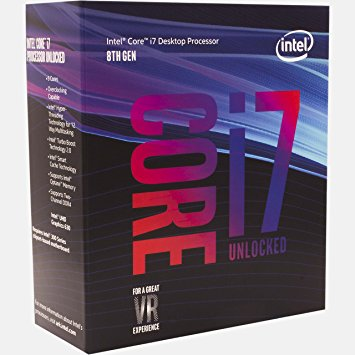

En CPU som også er kalt prosessor, er hovedregne-/prosesseringsenheten i en datamaskin som utfører instruksjonene gitt i
et dataprogram, og den er det primære elementet som gjennomfører datamaskinens funksjoner. Prosessoren har
typisk to logiske bestanddeler: styreenheten og utførelsesenheten. CPU har overordnet ansvar for alt som
skal utføres, og delegerer eventuelt oppgaver til andre enheter. Primærlageret inneholder data som skal bearbeides,
samt de programmene som for øyeblikket trenger å være hurtig tilgjengelig for prosessoren. Den tar for seg
hver instruksjon i programmet i rekkefølge for å utføre systemets grunnleggende aritmetiske, logiske og innmatning-/utmatningsoperasjoner.
Tilbake til hovesiden